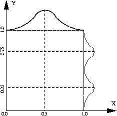

An FAQ for this homework is now available. If you have questions and can’t find an answer in it, please send an e-mail to the TA and cc Prof. Miikkulainen at risto@cs.utexas.edu.
In this homework you will explore the capabilities and properties of self-organizing maps (SOM) and learning vector quantization (LVQ). On a CS Linux machine, copy the entire contents of /u/www/users/risto/cs394n/private/hw1 to your own directory and proceed.
Part 1a: Peano approximation Form a 1-dimensional mapping of a uniform distribution on the 2-D unit square. To get a feel of the process and the parameters value, start with small maps (half a dozen units) and gradually work your way to larger maps (order of 102 units). How close to a Peano curve can you get? Are you convinced that it will actually get there if you keep adding units?
Part 1b: Distribution Form a 2-dimensional map of a nonuniform distribution on the 2-dimensional unit square, depicted below. The x-component is normally distributed with mean = 0.5. The y-component is a combination of two normal distributions, with means at 0.25 and 0.75. Again, start by experimenting with small maps, and after you have gained insight into the process, make the final mapping with a large network (10 by 10 to 10 by 20 units). How well can the map approximate a nonuniform distribution? How many units would you need to have to get a good approximation?

Digit Recognition In the following parts you will explore the capability of SOM and LVQ on the task of digit recognition. You will have to design 8 by 8 bitmap representations for each digit of 0 to 9, and concatenate the representations into 64-unit input vectors. Design 4-10 example patterns for each digit. Try to come up with a training set that would be likely to give good generalization to digits written in different styles, and also to noisy digits. You can use the X-window based pattern editor digit.cpp to create your training patterns. The source code, precompiled executables for various platforms (.pc for x86 Linux) and instructions on how to use it are in digit. The program can store the digits in several different formats; in this homework you will be using the SNNS format (.pat files).
Test Patterns The test pattern file digit-test.pat contains several examples of inaccurate, noisy, distorted, and otherwise corrupted input patterns. The objective is to find out how well the network generalizes into real world data, such as the patterns from the NIST dataset. Be sure you do not use any of the test patterns during training! Typically during testing, the output of the network is no longer a clear-cut classification as was the case for the training vectors. The output unit activities stand for the likelihoods of each classification.
Part 2: Dimensionality reduction Form a 2-d map of the 64-dimensional bitmap vectors that you designed. In order to properly separate the vectors on the map, you will need about four times more units than you have vectors. Can you see a topological order on the map? What relations are preserved and what are lost? Is it easy to draw the lines that separate the classes? In case you have more examples of certain types of input patterns, do you see a magnifying effect? When you are done with training/testing, try add more training examples. Do you get better performance?
Part 3a: Classification Label the units of the self-organizing map. Now use the test patterns from digit-test.pat as input: how many of them are classified correctly?
Part 3b: LVQ Continue training the self-organizing map it with your labeled vectors using the LVQ method. How does the map change? Test the classification again with the test input set. How does the performance compare to the self-organizing map of Part 3a? (If not, why?)
Tools: The SOM/LVQ directory has subdirectories for each part of the assignment. They contain the appropriate self-organizing map and LVQ programs and example data files. Copy these to your own working directory. Each directory also has a Readme file that explains how to get started. There is also a tar file that contains everything, but you will have to make the appropriate changes if you run the program locally (for example, set XENVIRONMENT to your local copy of part1a/XFmrevised if you want to modify the resource file). However, this really shouldn't be difficult.
Report: Write a one or two page report on the experiments you did, and what you learned from them. Does the feature map architecture deliver what the theory promises (magnification, Peano-approximation, visualization, classification)? Does the LVQ improve classification capabilities significantly? Under what conditions and tasks? Turn in the simulation files (including the final snapshot only) with your report. Also include the final labeled maps in parts 2 and 3.
Turning In: turn in via Canvas
Originally by Marshall Mayberry.